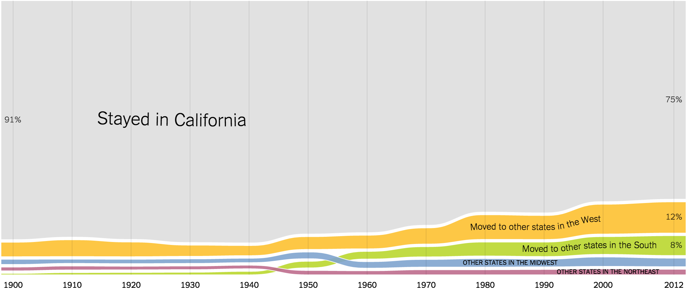

Where We Came From and Where We Went, State by State
Jeremy C.F. Lin
Gregor Aisch
NYT Upshot/ Graphic Editor
d3.js guru, creator of Data Wrapper, Mister ChartMaker.
Robert Gebeloff
NYT Upshot/ Data Journalist
Expert in census data.
Kevin Quealy
NYT Upshot/ Graphic Editor
d3.js guru, also does a lot of sketching in R
Check out chartsnthings on Tumblr for his kickass sketches
Story Idea
- Robert came cross this dataset a long time ago, but held on to it. He ended up writing the whole copy.
- Gregor and Kevin sketched the graphic and experimented with different chart forms. The final graphic was executed using d3.js.

Now let's look at the graphic
Design
- Inaccurate
- The white strips in between different strands waste space and they can easily be removed without affecting the understandability of graph.
Design
- Color encoding
- The big gray section was actually encoding relevant information (even with the huge "Born in ___" header).

Design
- The crossing strands seem a bit confusing
- Grouping creates confusions

Mobile Design
- Interactive to static Development simplicity Faster to load Mouse interactions don't traslate well on mobile
In Hindsight
- Kevin noticed that very little readers toggled between two charts. He wish they published two graphics showing both charts by default, or have two seperate URLs.